Chủ tịch Hồ Chí Minh (Cách mạng tháng 8)
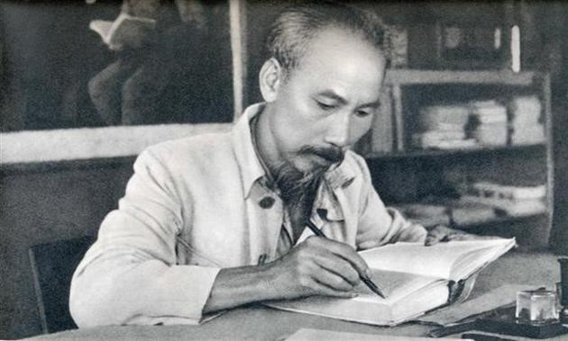
Tên thật: Nguyễn Sinh Cung
Sinh ngày: 19 tháng 5 năm 1890
Quê quán: Làng Sen, tỉnh Nghệ An
Bác là một nhà cách mạng vĩ đại, người sáng lập Đảng Cộng sản Việt Nam, lãnh đạo cuộc kháng chiến chống thực dân Pháp
và đế quốc Mỹ, đồng thời là người khai sinh nước Việt Nam Dân chủ Cộng hòa.
Những đóng góp nổi bật:
- Tổ chức và lãnh đạo Mặt trận Việt Minh.
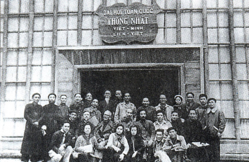 - Chỉ đạo cuộc tổng khởi nghĩa tháng 8 năm 1945.
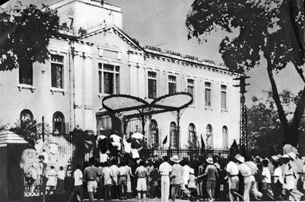 - Đọc Tuyên ngôn Độc lập ngày 2/9/1945.
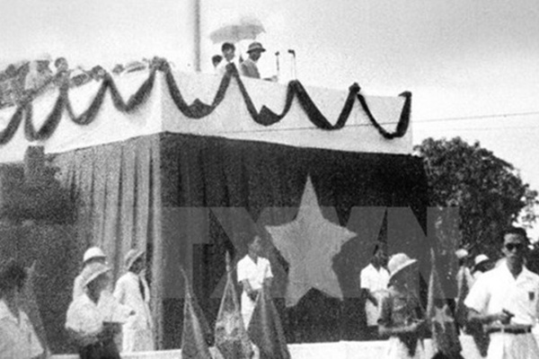
Nguyễn Trung Trực (Kháng chiến chống Pháp)
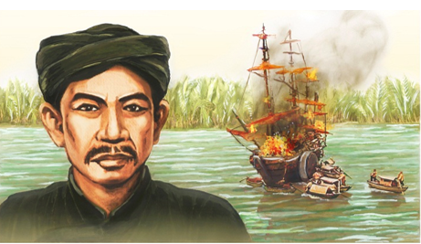
Tên thật: Nguyễn Văn Lịch
Sinh ngày: 1838 (ngày tháng chưa rõ)
Quê quán: phủ Tân An, tỉnh Gia Định
Nguyễn Trung Trực xuất thân từ một gia đình nông dân nghèo nhưng có tinh thần yêu nước. Ông nổi bật trong phong trào
kháng chiến chống Pháp ở miền Nam và trở thành một biểu tượng bất khuất.
Những đóng góp nổi bật:
- Lãnh đạo cuộc khởi nghĩa tại Rạch Giá năm 1868.
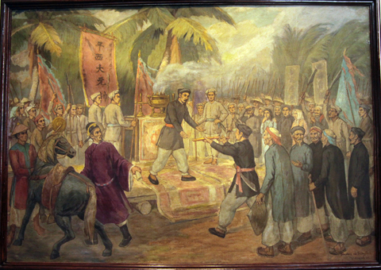 - Xây dựng lực lượng kháng chiến ở Nam Bộ.
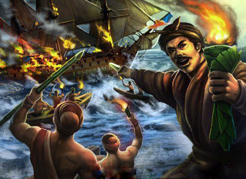 - Thể hiện tinh thần bất khuất trước kẻ thù.
Võ Chí Công (Kháng chiến chống Mỹ)
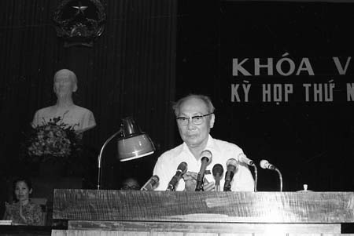
Tên thật: Võ Toàn
Ngày sinh: 7/8/1912
Quê quán: Phú Thành, Quảng Nam
Võ Chí Công là một nhà lãnh đạo quan trọng trong cuộc kháng chiến chống Mỹ cứu nước. Ông đã góp phần tổ
chức và lãnh đạo nhiều chiến dịch lớn, đồng thời đảm nhiệm nhiều vai trò quan trọng trong công tác chính trị.
Những đóng góp nổi bật:
- Chỉ huy nhiều chiến dịch quan trọng tại miền Nam.
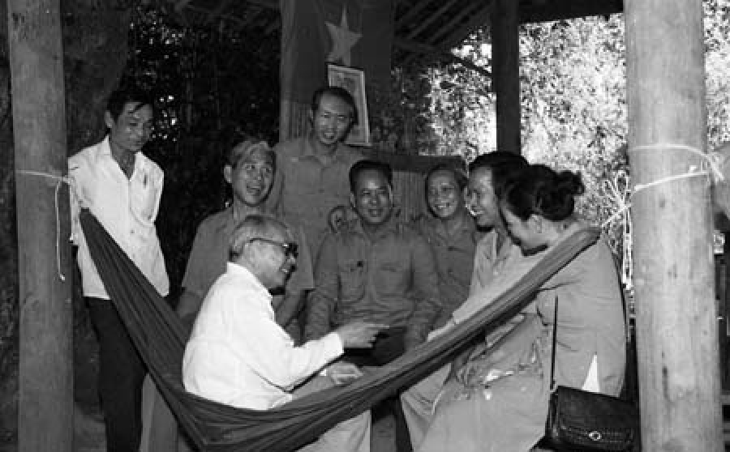 - Tham gia xây dựng Mặt trận Dân tộc Giải phóng miền Nam.
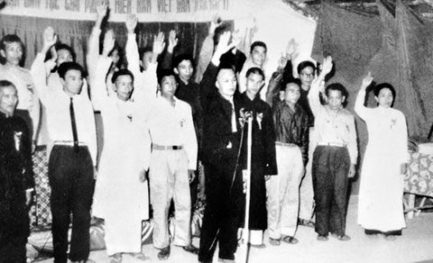 - Đóng góp vào chiến thắng Tết Mậu Thân 1968.
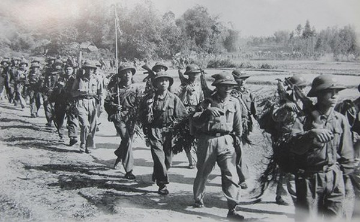